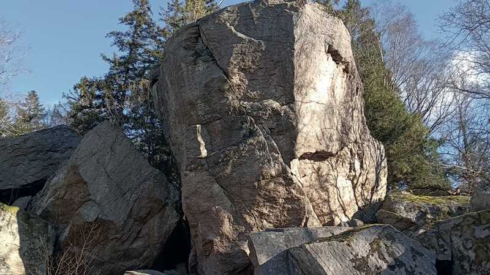

Hallands största flyttblock heter Glamsten och ligger i närområdet.

Ett flyttblock är ett stenblock som slitits loss från sitt ursprungsberg och transporterats iväg av stora isar.
Ca 9500 f.Kr. höjdes temperaturen drastiskt och glaciärisens avsmältning accelererade. Nu började Halland se dagens ljus och det är från den här tiden som de flesta flyttblocken i landskapet härstammar.
Flyttblock har i alla tider fascinerat människor och inom folktron är de ofta förknippade med övernaturliga väsen. Man trodde förr att jättar hade slungat iväg dessa stora stenar. Därför kallades de ”jättekast”.
Utmed Löftaåns dalgång finns också områden med grönsten, som påverkar vegetationen. Alm och ask är vanliga, och växtligheten är rik på bl.a. sårläka, blåsippa och murgröna – särskilt vid Almedal och Glamsten.
Du når glamstenen via en stig från OK Löftans lokal förbi Lillesjön och Glamsjön, eller genom att gå upp i berget norr om Glamsjövägen 123.
Källa: Länsstyrelsen Halland
Halland’s largest glacial boulder is called Glamsten. It was torn loose from the bedrock and moved by ancient glaciers. Around 9500 BC, as the ice melted, Halland emerged and many of these boulders were deposited.
In folklore, these large stones were believed to be thrown by giants, hence the name ‘giant’s throw’. Vegetation around Glamsten is rich due to mineral-rich greenstone areas with elm, ash, and plants like liverwort, ivy, and blue anemone.
You can reach the boulder by hiking north of Glamsjövägen 123 or from OK Löftan’s trail past Lillesjön and Glamsjön (approx. 2.2 km).
Den här texten står också på en skylt utmed leden. Skyltarna är placerade längs de gång- och cykelvägssträckor som anlagts för att tillgängliggöra Löftaåns dalgång och dess rika natur och kulturhistoria.